En el subte
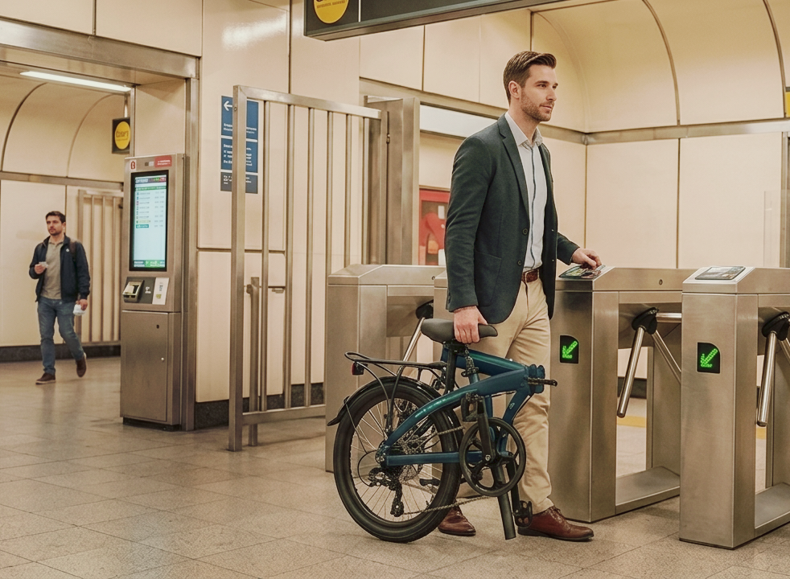
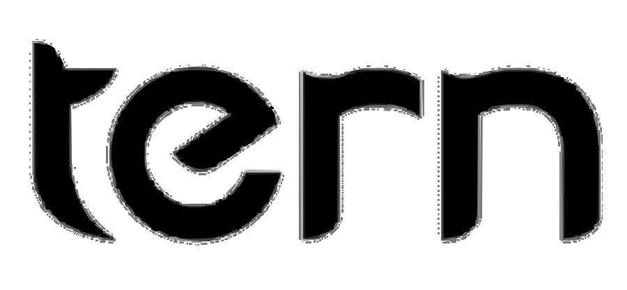
La bicicleta plegable que combina rendimiento, durabilidad y la libertad de llevarla a donde quieras.
Descubre la Link B7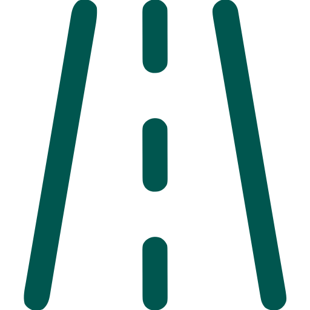
Práctica para llegar a donde quieras
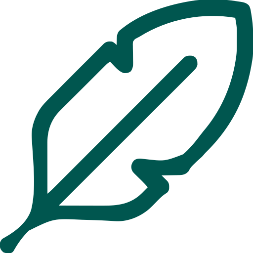
Ligera, ágil y fácil de transportar
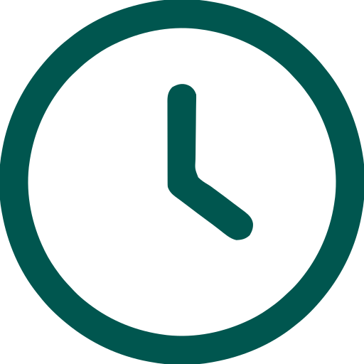
Plegado rápido y sencillo
Componentes pensados para durar
Cada componente ha sido seleccionado para ofrecer el equilibrio perfecto
entre durabilidad, bajo peso y agilidad urbana.
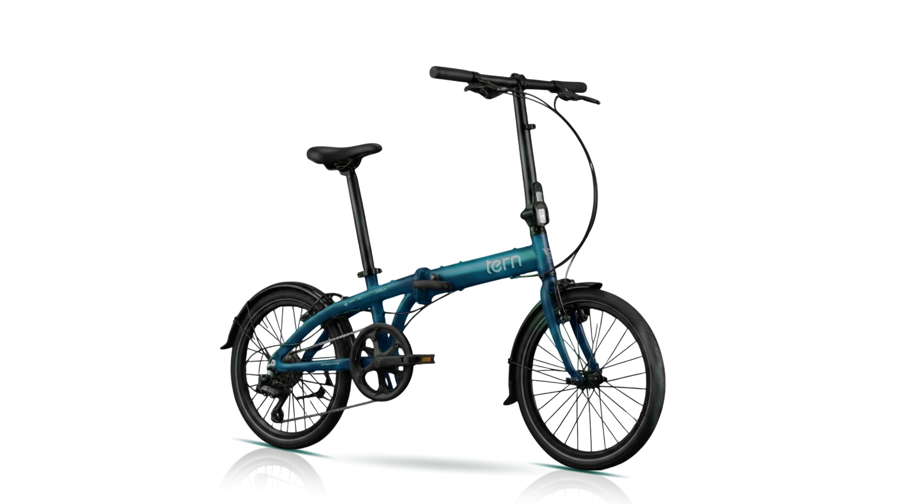
El Telescopic Handlepost se sube o baja en segundos: más alto para ir cómodo, más bajo para mayor aerodinámica.
Desarrollado en aluminio de alta resistencia mecánicamente, optimizado para soportar las exigencias diarias de la ciudad.
El sistema Q-Lock con AutoLock pliega el manubrio y lo asegura de manera automática, ofreciendo mayor practicidad.
Un sistema de cambios preciso y versátil, ideal para afrontar pendientes urbanas y llanos veloces sin esfuerzo extra.
El Telescopic Handlepost se sube o baja en segundos: más alto para ir cómodo, más bajo para mayor aerodinámica.
Desarrollado en aluminio de alta resistencia mecánicamente, optimizado para soportar las exigencias diarias de la ciudad.
El sistema Q-Lock con AutoLock pliega el manubrio y lo asegura de manera automática, ofreciendo mayor practicidad.
Un sistema de cambios preciso y versátil, ideal para afrontar pendientes urbanas y llanos veloces sin esfuerzo extra.
Sin complicaciones, sin herramientas, solo un movimiento fluido para estar siempre listo.
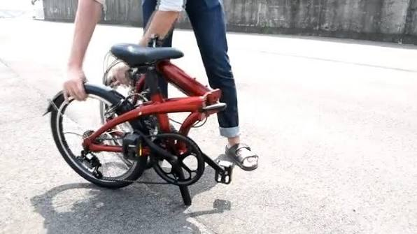
Llevala al trabajo, subí al transporte público o guardala en tu departamento.

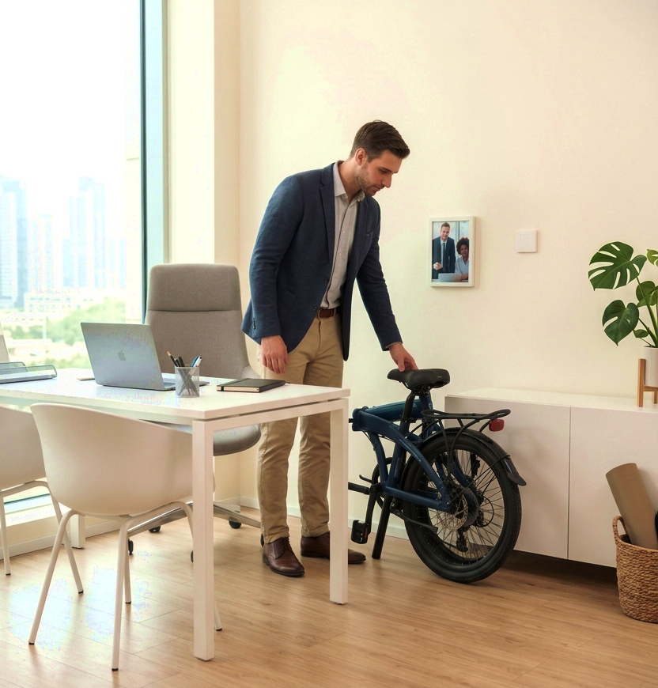
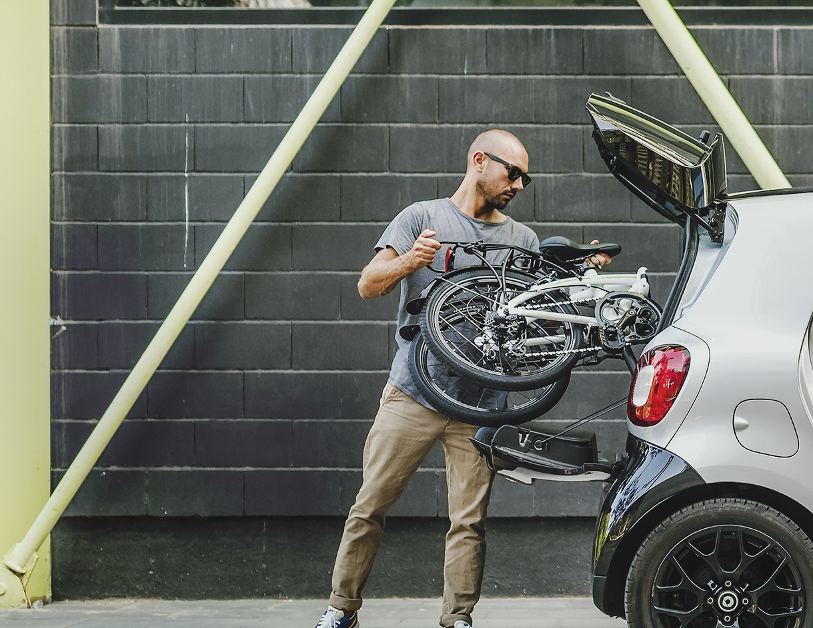
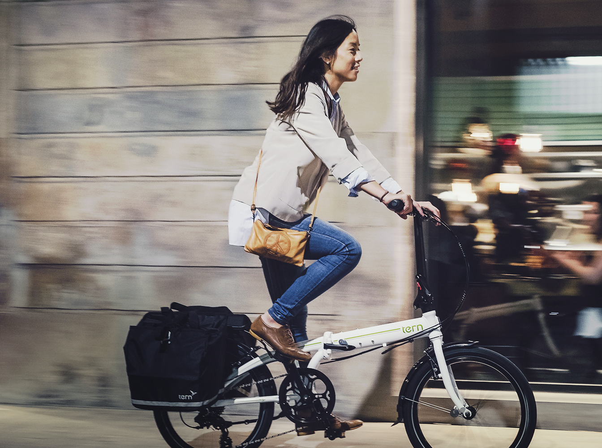
Personalizala con estos accesorios esenciales para el día a día
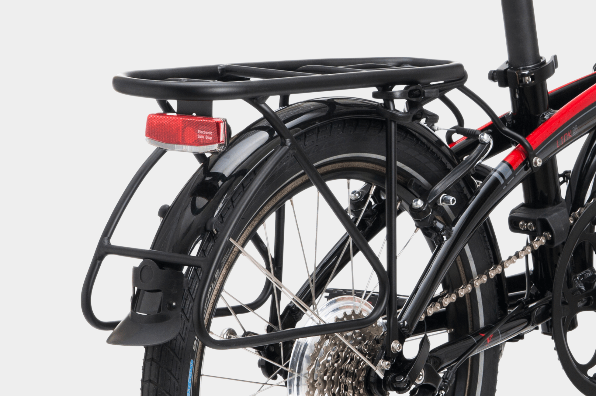
Construido en aluminio con un sistema ultra-rigido.
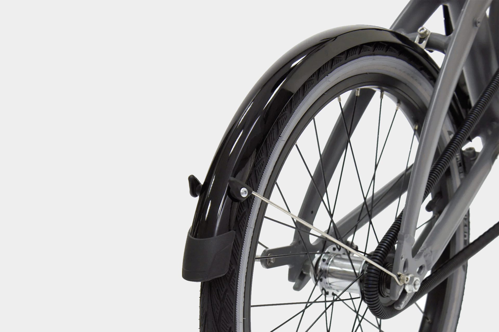
Estos guardabarros te mantendrán a ti y a tu bicicleta secos y limpios.
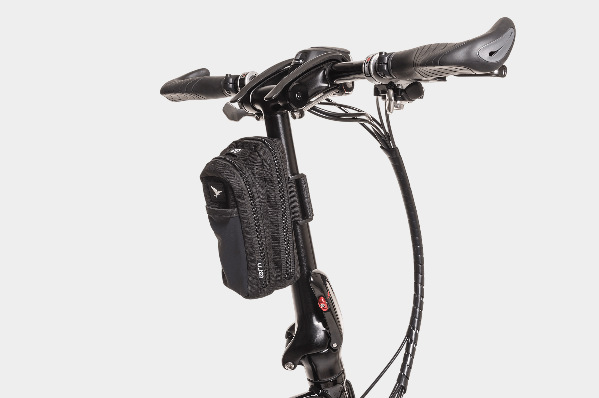
Compacta para que lleves todo lo que va en el bolsillo.
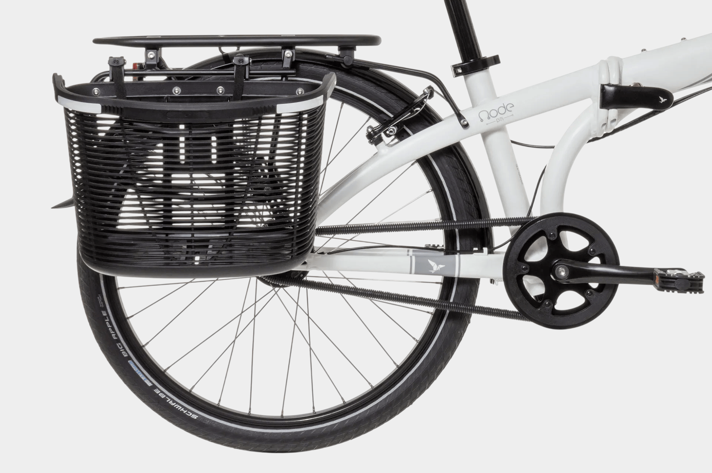
Se ajusta en tu portapaquetes trasero de manera rápida y fácil.